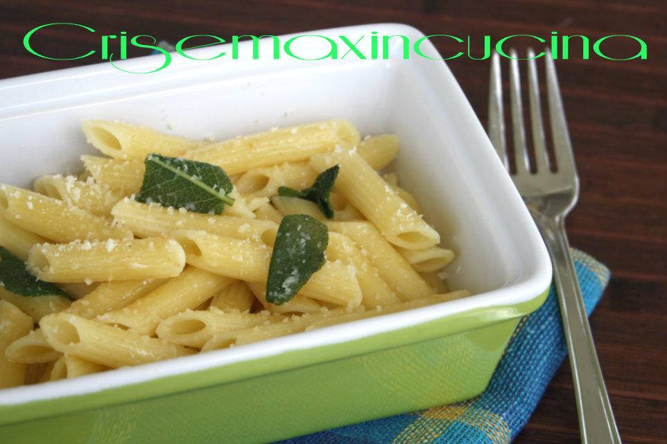

Let's Make Some Pasta Burro and Salvia!

Ok, bur what is Pasta burro and salvia?
It's just a pasta dish you cook when you want something tasty but easy.
Ingredients
- 400g of penne
- 200g of pecorino
- 200g of butter
- 15 salvia leaves
Steps
- Cook the the pasta in boiling salted water
- Melt the butter in a pan
- Cook the leaves in the melted butter
- Add the cooked pasta and all the parmigiano
- Enjoy!